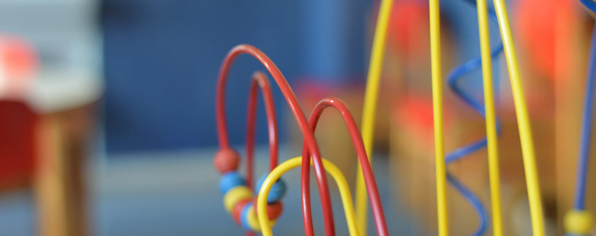

Bienvenue à la crèche parentale la chenille!

Fondée en 1985, la crèche parentale La Chenille à Strasbourg dans le quartier Meinau situé à quelques minutes de la place du marché de Neudorf accueille 13 enfants dans une ambiance chaleureuse et familiale.
De nombreux parents habitent les quartier de Neudorf et de la Meinau. Ils ont choisi la crèche parentale La Chenille car elle propose un cadre convivial avec un encadremenet d'une grande qualité.
La bienveillance et le respect du rythme de l'enfant sont au coeur de nos valeurs : apprentissage de l'autonomie, motricité libre, communication gestuelle.
Pour nous il est très important que les enfants bénéficient d'une alimentation saine et équilibrée. Chaque jour les repas bio sont préparés sur place par notre cuisinière professionnelle à partir de produits frais et de saison.
La Crèche la Chenille dispose d'un grand jardin aménagé dans lequel les enfants évoluent librement et en toute sécurité au fil des saisons.
Actuellement des places sont disponibles: merci de vous rendre sur la page inscriptions.
Avant toute inscription, nous vous invitons à prendre connaissance du rôle des parents dans la crèche parentale La Chenille
Nos Valeurs
La crèche La Chenille est un lieu de convivialité et de rencontre pour les familles, favorisant les échanges autour de l’éducation, la santé et l’épanouissement des enfants.
Le respect
Nous considérons l’enfant comme une personne à part entière et prenons en compte son rythme personnel et valorisons ses différences. A la crèche La Chenille l’enfant est capable de faire des choix et nous l'accompagnons dans cet apprentissage essentiel dans la construction de la confiance en soi.
La bienveillance
Nous accompagnons l'enfant dans la découverte du monde, l'apprentissage et la gestion de ses émotions. Les animatrices petite enfance sont formées pour lutter contre les Violences Educatives Ordinaires (VEO) pour une gestion des situations conflictuelles saine et respectueuse de l'enfant.
L’autonomie
motricité libre : nous permettons à l'enfant d'investir les différents espaces à sa manière et à son rythme dans un cadre sécurisé. L’enfant se développe en toute confiance et acquiert l'autonomie progressivement à toutes les étapes de son développement. Elle garantit son indépendance future avec le soutien et l’accompagnement des adultes.
Une alimentation saine et respectueuse
Nous proposons des repas bio préparés à partir de produits frais et adaptés aux régimes alimentaires spécifiques de chaque enfant (par exemple : respect des intolérances alimentaires tel que gluten ou laitage, Hallal). Les familles désirant poursuivre l'allaitement sont accompagnées dans leur démarche. Il est possible de nous confier le lait maternel.
La crèche La Chenille une crèche parentale depuis plus de 30 ans
Notre particularité est d’être une crèche parentale : c’est à dire qu’à la place d’un directeur ou d’une directrice, ce sont les parents qui gèrent l’administration de la crèche en collaboration avec une responsable technique.
Chaque famille participe une demi-journée par semaine à la crèche, et assure un certain nombre d’autres responsabilités.
Cette organisation fait de La Chenille un lieu riche en échanges et en partage, et demande un véritable engagement de la part de chaque famille.
L'engagement des parents en quelques mots...
La crèche parentale La Chenille est une association dont les parents sont des membres actifs.
En participant aux activités, chaque parent apporte son expérience et sa personnalité et pour les
enfants, la multiplicité des parents apporte une richesse sociale et culturelle.
En rencontrant d’autres enfants, d’autres parents et des professionnels pendant les permanences ou
les réunions, le parent peut également confronter ou conforter ses propres pratiques éducatives et
ainsi les faire évoluer.
Les permanences
Chaque couple de parents assure, dans le cadre du fonctionnement de la crèche, une demi-journée de permanence par semaine (et par enfant). Les matins de 9h à 13h30, les après-midi de 13h45 à 18h15. Pendant ces permanences, le rôle du parent est de soutenir le personnel éducatif dans les activités quotidiennes.
Le conseil d’administration
Les parents sont tous membres du conseil d’administration et assurent une des "commissions" citées ci-dessous. Une fois par mois, ils participent obligatoirement aux assemblées générales (AG) pendant lesquelles les décisions concernant la vie de la crèche sont prises.
Les postes du bureau
- Responsable légal des décisions prises en CA
- Veille au respect du droit du travail vis à vis des salariés ( rdv RIS, pesée de salaire...)
- Effectue les démarches administratives obligatoire vis à vis de nos partenaires (PMI, ville, CAF, AST 67, DIRECTE...)
- Anime les CA
La présidence (1 personne) :
- Fait le lien entre les salariés et les parents
- Suit les plannings et congés des salariés
- Suit les rdv à la médecine du travail
- Suit les arrêts maladies conjointement avec la vice-trésorerie
La vice-présidence (1 personne) :
- Établit et envoie les facture aux familles
- Suit les paiements des familles
- Transmets les données statistique et financière de la crèche à la CAF et à la ville afin de recevoir les subventions de fonctionnement.
La trésorerie (1 personne) :
- Suit les dépenses de la crèche (paiement et archivage factures)
- Établit et paie les fiches de salaires et contrats des salariés avec l'aide de la gestionnaire de paie
- Transmets les arrêts maladie à la gestionnaire de paie
La vice-trésorerie (1 personne) :
- Écrit et envoie les comptes rendus de CA
- Distribue et envoie le courrier et les mails
- Met à jour et réécrit les documents de communication interne (règlement, livret accueil des parents, liste des commissions....)
Le secrétariat (1 personne) :
Les autres "commissions":
- Fait les courses nécessaires au bon fonctionnement de la crèche ( couches, produits d'entretien, nourriture...)
- Établit et envoie le budget prévisionnel/devis des investissements N+1 à la CAF et la ville
- Achète le matériel subventionnés par la CAF et la ville pour l'année en cours puis envoie les preuves d'achat à la CAF et à la ville
Achats / investissements (2 personnes)
- Mets en place tous les moyens nécessaires pour faire connaitre notre crèche, rencontre les familles intéressées et soumet les "pré-inscriptions" au vote du CA
- Organise le recrutements des salariés et apprentis en lien avec l'équipe professionnelle et la vice-trésorerie
Recrutement familles / professionnel(les) (2 personnes)
- Organise et suit le bon déroulement des formations pour les salariées. Ces formations sont décidées en fonction du caractère obligatoire de celles-ci, des souhaits des salariés et des objectifs RIS pour chacun d'entre eux
Formation des salariés (1 personne)
- Fait vivre la page Facebook de la crèche
- Met à jour le site internet
- Organise les diverses fêtes de la crèche
- Organise l'archivage numérique et papier de la crèche afin de faciliter les passations de commissions entre les familles.
Informatique / vie de la crèche / archivage (1 personne)
- Réalise les petits travaux de réparations et d'entretien à la crèche.